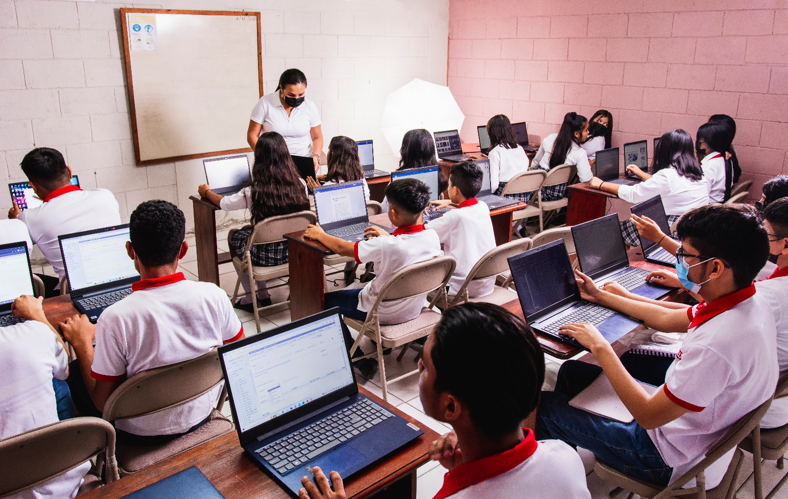

Bienvenid@s
Te brindaré información sobre esta hermosa carrera.

Primeramente me presento
Mi nombre es Suany Daniela Bardales Campos
Soy estudiante de 12vo de la carrera de informática,
próxima graduada de INTAE 2025.
Para mí es un honor brindarles información de la bella carrera que curso.
¿Qué es el Bachillerato Técnico Profesional
en Informática para ti?
El Bachillerato Técnico Profesional en Informática es:
Conjunto de conocimientos, habilidades, actitudes y comportamientos técnicos
que caracterizan al egresado de la carrera.
Para entender más claramente la carrera,
veamos primero ¿Qué es informática?
¿Qué es la Informática?
Es la ciencia que estudia sistemas computacionales para procesar información automática.
Incluye programación, redes, bases de datos, IA y más.
También se enfoca en el tratamiento digital de datos con dispositivos electrónicos y software.
¿Por qué elegir Informática?
Elegir un bachillerato en informática es una decisión estratégica que ofrece múltiples beneficios:
Adquisición de habilidades digitales:
Permite a los estudiantes adquirir conocimientos y habilidades necesarias para desenvolverse en la sociedad digital actual.
Base para estudios superiores:
Es fundamental si se desea estudiar ingeniería en informática, ya que proporciona una sólida formación en matemáticas y ciencias.
Oportunidades laborales:
La informática es un campo en constante crecimiento, lo que se traduce en una alta demanda de profesionales capacitados.
En resumen,
optar por un bachillerato en informática no solo prepara a los estudiantes para el futuro académico, sino que también les abre puertas en el mercado laboral.
y en INTAE desarrollarás habilidades prácticas como programación, redes, mantenimiento, diseño web y más.
Información Detallada de la Carrera
Esta carrera te prepara con conocimientos sólidos en áreas clave para el mundo digital.
También fomenta habilidades blandas como el pensamiento lógico y el trabajo en equipo.
Esta hermosa carrera tiene la duración de 3 años
Competencias de la Carrera
• El estudiante será capaz de diseñar presentaciones, bases de datos, diseño de publicaciones, navegadores de Internet, servicios de mensajería electrónica, tráfico, respaldo y manejo de archivos de forma local y en red, procesadores de texto, hojas de cálculo, etc.
• Manejo de software y hardware.
• Programación en distintos lenguajes.
• Diseño y administración de redes.
• Soporte técnico y mantenimiento.
• Desarrollo web, base de datos, y más.
Campo laboral El Bachiller Técnico en Informática se podrá desempeñar en:
• Centros o departamentos de informática de cualquier institución o empresa.
• Creación de medianas empresas dedicadas a asesorías en sistemas de información, mantenimiento correctivo y preventivo de equipo tecnológico, instalación de redes locales y capacitación sobre tecnología.
• Talleres o empresas de servicios técnicos en computación. Centros de capacitación en computación.
El egresado de este bachillerato podrá demostrar en el campo de trabajo profesionalismo, con una cultura y práctica de capacitación constante según los últimos avances tecnológicos.
Podrás trabajar como:
• Técnico en informática.
• Desarrollador de software.
• Soporte técnico.
• Administrador de redes.
• Freelance o emprendedor digital.
Plan de Estudio
Décimo Grado
- Matemática
- Español
- Fisica
- Química
- Biologia
- Inglés
- Sociología
- Informática
- Fundamentos de la Psicología
- Historia de Honduras
- Educación Física y Deportes
Undécimo Grado
- Matemática Aplicada
- Español II
- Educación y Apreciación Artística
- Filosofía
- Física Aplicada
- Inglés Técnico
- Programación I
- Ofimática
- Análisis y Diseño de Sistemas
- Informática Aplicada
- Legislación Aplicada a la Informática
Duodécimo Grado
- Desarrollo Web
- Gestión Empresarial Orientada
- Mantenimiento y Reparación
- Producciones Digitales
- Programación II
- Redes Informáticas
Docentes de Duodécimo
• Lic. Rene Lagos
• Lic. Norbi Alvarado
Coordinador del Área de Informática - INTAE
Nombre: Lic. Jarel Alonso Reyes
Teléfono: +504 8800-2448
Mi recorrido
Amo mi carrera y estas fotos son el reflejo
Mi recomendación
No lo pienses más y elige Informática
Gracias por llegar hasta aquí
Espero esta información sea de gran ayuda.
Recuerda: 100% Informática
Orgullo de ser estudiante de INTAE.
Creado por Suany Daniela Bardales Campos
Alumna de 12vo de Informática
Dios les Bendiga!!